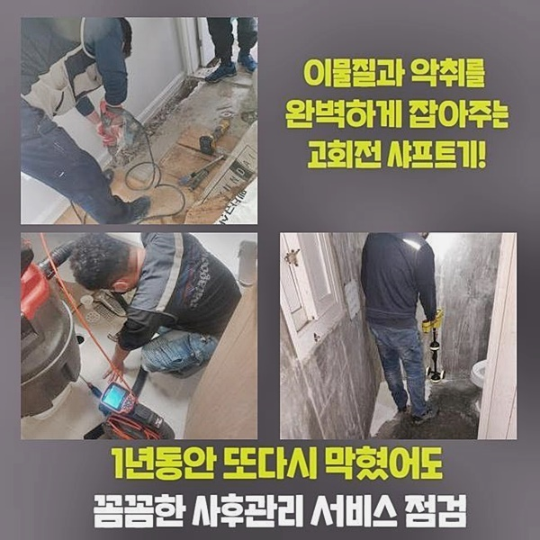
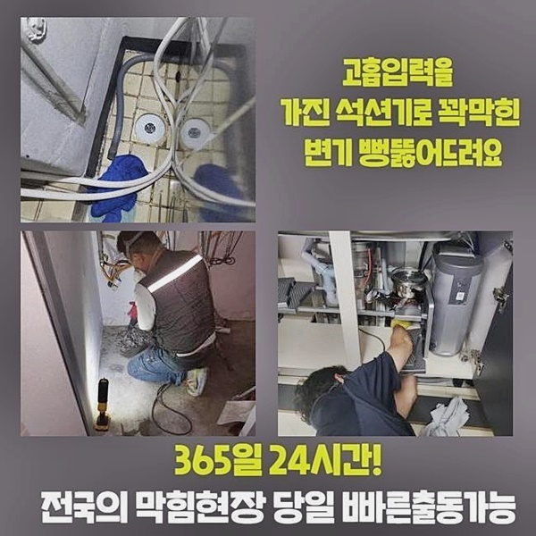
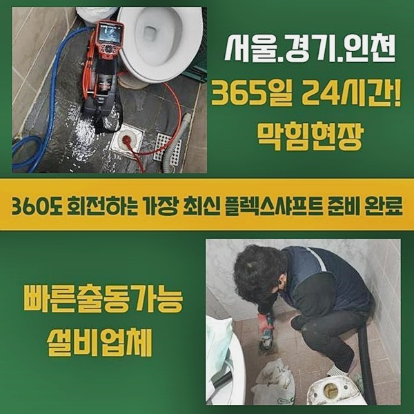
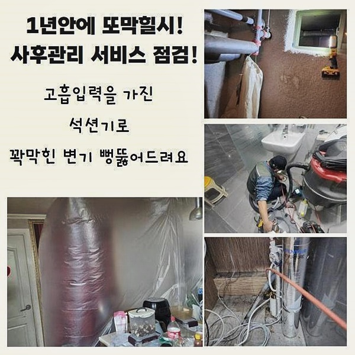
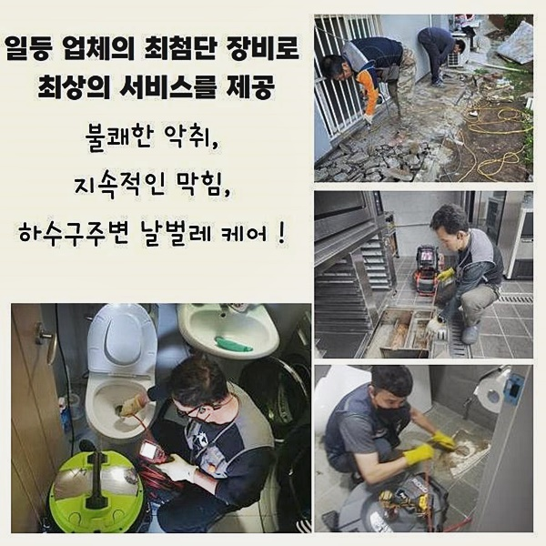
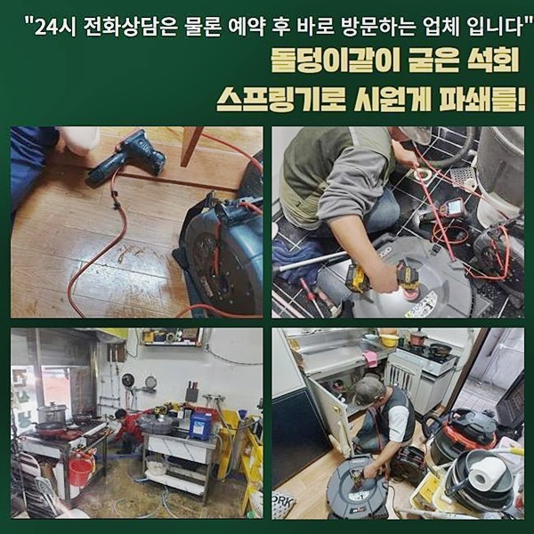

🏠 영등포 영등포동욕실뚫음 대림동 고압세척비용 부속수리
용인시 처인구 배관막힘 전문 시공 후기

📋 작업 개요
- 위치: 용인시 처인구, 수원시 영통구, 화성시 동탄
- 서비스 유형: 배관막힘, 고압세척, 내시경점검
- 작업 일시:
- 업체명: 하수구수사대 (010-5615-2118)
🔍 문제 상황
영등포 영등포동욕실뚫음 대림동 고압세척비용 부속수리
안녕하십니까!! 고객의 생활측면을 위협하고있는 하수관오류를 조속하며 오차없이 해결하고있는 전문가인데요
금일에는 생활 중에 가정에서 생겨나는 문제들을 보면서 설명드릴게요
무슨이유로 통수장애들이 때때로 발생될까요?
적절한 사항을 저희전문가들이 설명드리는 내용의 글로 적어보았어요
저희들이 만나뵈었었던 고객의 경우 배수오류가 발생되었을 시 대부분은 가벼운 문제로 생각하시어 온수를 흘려보내 증세를 시정하고자 시도해보기도 하죠
기름들이 축적되어 발생한 증세라는걸 인지한 상태에서 수행했지만
안타깝게도 며칠은 해결된 듯 보이다 같은 증상으로 막혀버림과 동시에 역류증상들도 야기되었어요
관찰하고서 자가적인 방법은 효과가없다 느끼신 의뢰인분은 해당 문제들을 바로 잡는 저희를 사용해 연락을 주셨고 저희전문진은 전문적으로 피해를 바로 잡아드릴것을 약속드렸어요
의뢰인분의 요청에따라 1시간 내에 도착했죠
하수관에서 배출되는 못하는 현상을 보고 즉각 관련 부품을 해체하고 안쪽을 살펴보았어요
확인해보니 딱딱해진 슬러지들과 이물을 넘어 하수도의 입구부분에 솟구친 하수들은 깊숙한 부분마저 체크해야한다는걸 일깨워줬죠

🔎 원인 분석
💡 전문가 진단: 정밀 진단 장비를 사용하여 슬러지의 고착 여부를 판명하고 타격/세척 작업을 실시했습니다.
일단 깨끗한 이물청소를 대표하는 석션장치로 배수관의 오수와 잔재들을 빨아당겼습니다
잔여물들이 배출되었지만 양상들을 보았더니 배수장애의 주범으로 자리잡을 양으로 보이지않았죠
때문에 저희의경우엔 더 깊은 곳에 문제들이 존재하는것으로 추측한뒤배수관을 정확하게 볼 수 있게하는 내시경장치를 가용해보았습니다
안쪽으로 내시경장치를 넣어주어배수장애의 원인과 어느구간에 결함들이 결집되어있는건지 파악했죠
내시경장비의 사용은 점검해줄때만 중요비중을 차지하지 않고 청소가 이뤄지고 난 뒤 테스트 시에도 없어선 안되죠
하수구 막힘 불편들을 없애기위해서 한다면, 적절한 기기들을 갖추고있는 전문인을 부르는게 합리적인 선택입니다
저희의 전문가는 앞서서 포기해버린 장소로부터도 찾아주고 계십니다
간혹 경제적 지출로 인하여 간소한 방식에 의지하는 분들도 있으세요
비용적인 측면도 중요하겠으나 증상의 재발 확률을 고려해야하죠
문제가 불거지면 연결부분이 벌어지게되며 물들이 새는것처럼 더 큰 문제들을 불러일으킵니다
그렇기에 짧은시간내에 수리될 가능성이 있는지 내시경장치로 빈틈없이 파악해주고 작업들에 몰입하는게 우선되는데 점진적으로 접근해야 변수를 줄일 수 있고 놓치는 부분없이 깔끔히 뚫을 수 있어요
저희의 전문가는 다양한 시설에관한 실력과 경험들을 가지고있는 전문가에요

🔧 작업 과정
의뢰자의 주거지를 깨끗하며 보건성을 유지한채로 지낼 수 있게 이를 중요한 가치로 삼고 만족감을 지원하고 있습니다
결함이 발생했다면 편하게 저희업체에게 의뢰하세요!
찾아뵈어 의뢰자의 집을 원상복구시키고 이전의 생활로 복귀시킬것을 약속드려요
내시경으로 수직배관 끝까지 체크하니 슬러지들로 오염이 심했던 현상을 띄고 있었습니다
부피가 커서 석션기기로 풀어갈 수 없던 기조를 파악해보았습니다
군데군데 잔존하는 큰 덩어리들을 제거하려면 샤프트기라 불리고있는 도구들을 이용해주어야 했죠
장치를 써서 덩어리들을 잘게 제거하고 흡입기로 청소해줍니다
회전하고 있는 머리부분의 노커들이 오염물을 쉽게 빼내고 분쇄해, 각 라인을 깨끗히 유지시켜주는 역할들을 하는데요
작업들을 이어나가다가 단계를 멈추어 확인해보았더니 샤프트장비의 체인에는 슬러지화 된 오염원이 덕지덕지인 상태였어요
이것으로 인하여 이물질의 누적상태가 좋지않음을 뜻하며 청소를 꼼꼼하게 이어나가줄것을 뜻하는것이였습니다
반복적으로 내시경장비로.내시경기기로 현재의 모습을 보고 이물들이 슬러지화 된 대량인것을 목격하고 분쇄 현재의 모습을 이어가야했어요
석션기로 음식물 이물들을 계속하여 빨아당기며 청소해주고 안측을 깨끗히 정리했죠
더군다나 단단한 잔해물질이 가득하여 현 상태를 세심히 진행해주었습니다
이것과같이 하수구 막힘 고민을 고쳐내고있는 저희 업체에서는, 문제가되는 잔해물질이 안보이는 시점까지 꾸준히 뚫는 내부 상황을 진행시켰어요
내시경으로 내측이 청결해진걸 알게되었죠
배출되어 모여진 오염물이 이것을 정확히 보여주었어요
이것처럼 많은 양이 있는 상태였으면 문제가 그대로죠
그리하여 오염원을 빈틈없이 청소하는게 중요하게 자리잡았고 단순하게 석션도구만 작업하는건 일시적으로만 뚫리고 다시금 증상들을 불러오게하는데요
해결된것을 내시경장비로 체크했어도 작업한 다음 많은 양의 물들을 이용해 배수테스트과정을 실시해주었어요
이러한 절차를 수행하면서 배수관 물증상들이 있는건 아닌지 세심하게 살폈고 그로인해 이상없는채로 물들의 통수들이 조속하게 수행되었죠


✅ 작업 완료
저희전문진은 배수장애 까닭들을 자세히 진단하고 의뢰인분의 집에 알맞는 방법들을 지원해요
앞서 발생된 똑같은 하수구 막힘 문제들이 다시금 나타나지 못하게 문제를 보이는 구간은 문제없이 세척했어요
하수구 내시경 렌즈를 통하여 작업 단계와 작업 이후의 점검과정 또한 의뢰인분이 이해하시게끔 도와드렸어요
이처럼 어려운 하수구가 제 기능을 못하는 사태에 봉착했을 경우 즉시 저희들에게 연락해보세요!
저희들은 고객분의 문제들을 빠르게 제거시키도록 모든 전문적인 접근과 해결능력을 동원할 만반의 준비들을 하고있습니다



⚠️ 하수구 배관 막힘 예방 및 관리 가이드
- ✅ 머리카락, 비닐, 물티슈 등 물에 분해되지 않는 이물질은 절대 흘려보내지 마세요.
- ✅ 기름기 많은 식기는 설거지 전 키친타올로 먼저 기름때를 닦아내세요.
- ✅ 주기적으로 배수구에 뜨거운 물을 가득 부어주어 유지방 고착을 방지하세요.
- ✅ 작업 후 1년 이내 재발 시 무상 A/S 보증 서비스를 제공합니다.
💡 핵심 정리
- 확실한 장비 작업(내시경 점검 및 샤프트 스케일링)으로 원인을 뿌리 뽑습니다.
- 작업 후 1년 이내에 동일한 부위 재발 시 100% 무상 A/S 서비스를 보장합니다.
- 서울 · 경기 · 인천 전 지역에 24시간 언제든 긴급 출동할 수 있도록 항시 대기 중입니다.
❓ 자주 묻는 질문 (FAQ)
🚨 용인시 처인구 배관막힘 문제로 고민이신가요?
정확한 원인 진단과 확실한 시공으로 재발 없는 해결을 약속드립니다.
24시간 긴급 출동 | 서울 · 경기 · 인천 전지역 | 1년 내 재발 시 무상 A/S